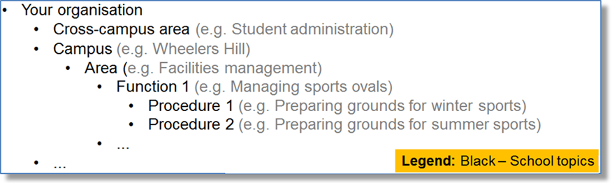
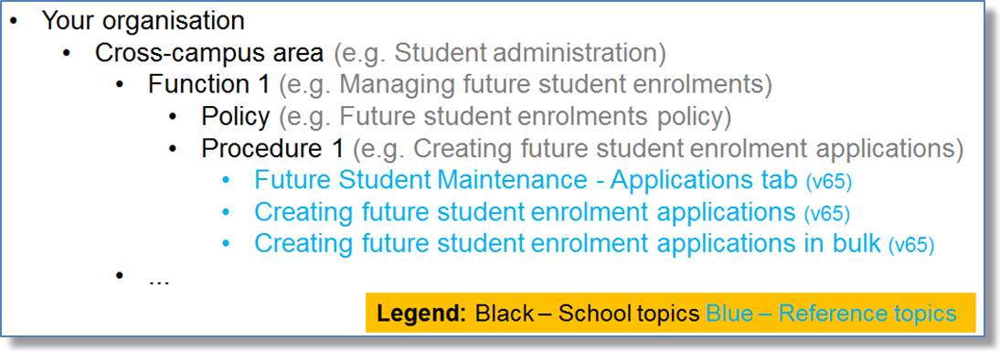

Writing and integrating school documentation
Organisations such as yours have a huge investment in people, processes and software applications. We have the skills, experience and tools to improve your policies and procedures to meet the needs of your users, on their favourite devices. We can:
- Import your current Microsoft Word (or similar) policies and procedures. This enables us to deliver the multiple outputs to your users.
- Work with you and your subject matter experts to improve the existing content and write new content.
The following example is for a school that:
- has more than one campus
- does student administration functions centrally for all campuses
- currently uses version 65 of the Synergetic suite of products
- has campus-specific functions, such as facilities management, that do not use Synergetic.
The table of contents below shows the:
- Student administration area has a function to manage future student enrolments. The policy includes important information about the priority of applications.
- Facilities management area has a function to manage sports ovals.
Writing new content
We can write content for any purpose and for any audience. In the following example the Facilities Manager is approaching retirement, and there is a need to capture and publish his vast knowledge before he leaves to ensure that critical organisational knowledge is preserved.
Here’s part of the table of contents for the facilities management content.
We interview the facilities management staff and possibly take photos and videos. We then write new content and update existing content – we are the expert writers – leaving your staff to get on with what they do best. We ask the facilities management experts to provide their feedback on the draft so the content is accurate and comprehensive.
Once we have finalised the newly written or updated organisational topics, we can publish and deliver the output in the formats that suit the way your individual users work. For the facilities management users they might:
- Initially, print their manual but find that it is easier to use the online version from their desktop. The original manual gathers dust and eventually ends up in the recycling when the policies and procedures are next updated.
- Use the mobile version when out and about. This is particularly useful for tasks done infrequently or tasks where it is critical to get it right; such as starting the boiler.
Integrating your topics with Synergetic suite reference topics
We can also integrate your organisation’s policies and procedures with the reference information from any of the Synergetic suite of products for your current release, including:
- Synergetic
- SynWeb
- Community Portal
- SynMobile
- Primary Time.
Your users can have all the relevant information to hand, when they need it, on their favourite devices.
In this example we have interspersed three Synergetic reference topics from the v65 version of the Future students manual with your own student administration policies and procedures.
Upgrading topics to a later Synergetic release
When you plan to upgrade your version of the Synergetic suite, we can:
- provide you with the latest reference topics interspersed with your own
- update your own topics based on new and updated reference topics.
In the following example:
- Procedure 1 is an existing topic of yours with three Synergetic topics included:
- Two topics remain the same (first and second topics).
- One new V66R2 topic replaces the previous version (third topic).
- Procedure 2 is a new topic of yours, developed together with your staff:
- One new SynWeb topic is included: Setting future student statuses in bulk.
- One new Community Portal topic is included: Customising the Applications tab.
- We can also link to external information as needed.
Conclusion
We are very proud to have been writing and delivering documentation to Synergetic Management Systems since 2003. You and your users can see by our work how we are committed to quality. Contact us to discuss how we can tailor our service to your needs and those of your staff.